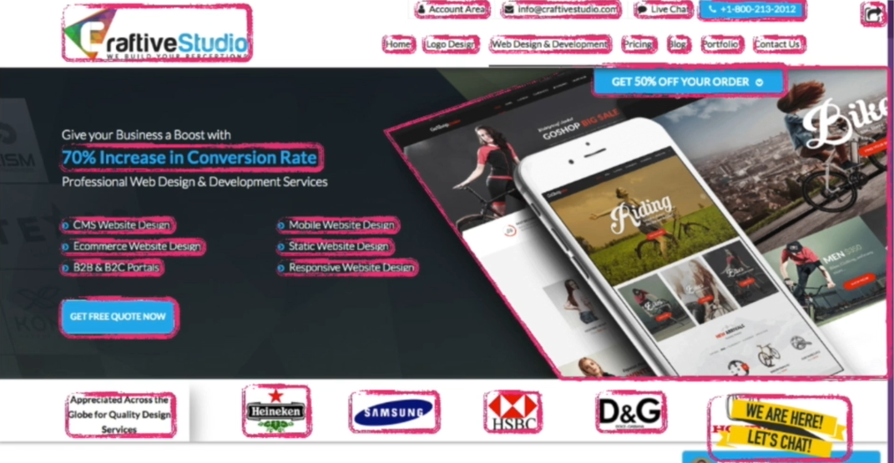
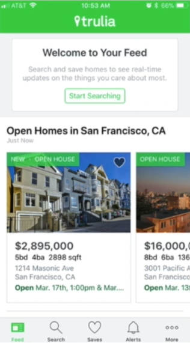
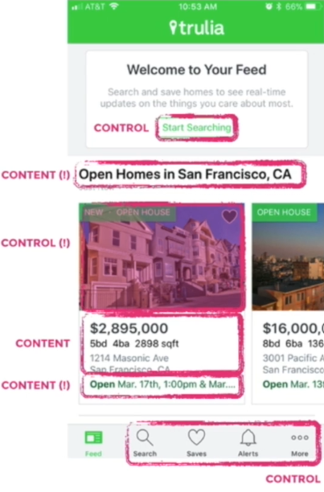
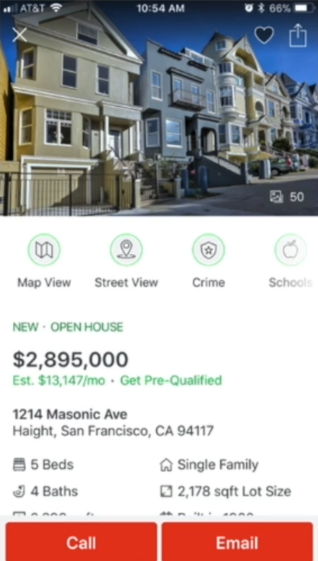
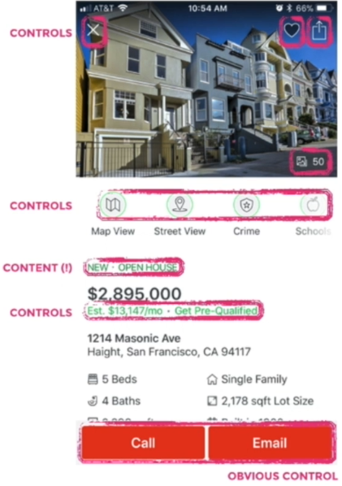

Jump to a section
47 · Separating Content from Controls Part 01
Refined 15 October 2026 from the supplied Joe Natoli course notes. Original wording and captures remain preserved.
Core principle
Content and controls need distinct, consistent signals so users can predict what is interactive.
Application to game tools
A read-only preview row should not look like an editable field. Buttons need visible labels and state cues.
Assessment and qualification
Content may legitimately be interactive, such as asset rows that open details. The requirement is clear affordance and consistent behavior, not physical separation of all content.
Try it
Which elements do users expect to click, and what actually happens?
Source: 47 Separating Content from Controls Part 01.md
Study detail and teaching translation
Audit the cues that imply interactivity: button shapes, link styling, icons, consistent state changes and learned conventions. A user should be able to make a reasonable prediction before clicking.
Do not style a static heading like a button or reuse the same strong cue inconsistently for clickable and non-clickable content.
Teaching adaptation: a preview can be read-only while an asset row opens details. Make that distinction discoverable. When users call a view “busy,” investigate competing priorities rather than assuming a specific cause.
Original captures




